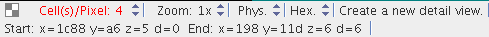

Creating and managing detail views
A detail view allows you to examine a part of the DUT independently of the overall display in the Chip Overview tab (and any other detail views you may have created).
About this task
You can create detail views at any time in the Chip Overview tab of the main BFM Viewer window or any existing detail view window.
Each detail view has its own window.
Before you begin
The bit fail maps must have been loaded, as described in Loading bit fail maps into the BFM Viewer.
Procedures
Creating a new detail view
- In the status bar of the Chip Overview tab or any existing detail view, make sure that the
mode indicator (at the top right) is showing "Create a new detail view":

If it is not, right-click anywhere in the window and choose New Detail View from the shortcut menu.
- With the mouse, select the area that you want to make into the new detail view.
As soon as you release the mouse, the window with the new detail view opens and the view is added to the Current Detail Views list in the Chip Overview tab.
The BFM Viewer lets you open up to ten detail views.
Deleting a detail view
To delete a detail view, close its window.
Activating a detail view
To activate a detail view, use either of these methods:
- Click its window.
- Click its name in the Current Detail Views list of the Chip Overview tab.
Zooming in and out of a detail view
To zoom in to or out of a detail view, use either of these methods:
- Press the Page Up key to zoom in or the Page Down key to zoom out.
- Click the arrows beside the zoom indicator in the detail view's status bar. Clicking the up arrow increases the zoom level, clicking the down arrow decreases it.
Zoom levels from 1x (original size) through 32x are available.
Changing the number of cells per pixel
To simplify the data display, multiple cells are usually combined into one screen pixel. to change the number of cells that one pixel represents, use either of these methods:
- Press the I (letter i) key on the keyboard and click to decrease the number, or press the O (letter o) key and click to increase the number.
- Click the arrows beside the cells/pixel indicator in the detail view's status bar. Clicking the up arrow increases the number of cells per pixel, clicking the down arrow decreases it.
Viewing a different area in the detail view (panning)
To move the displayed area from the detail view window, use either of the following methods:
- Press the arrow keys.
- Right-click in the detail view and choose Pan/Zoom from the shortcut menu. Then click in the view and move it around as desired with the mouse key held down.
To move the displayed area from the Chip Overview tab:
- In the status bar of the Chip Overview tab, make sure that the mode indicator (at the top
right) is showing "Move a selected detail view".
If it is not, right-click anywhere in the window and choose Move Detail View from the shortcut menu.
- In the Chip Overview tab, click the rectangle representing the detail view you want to move
and drag it to desired position.Note You can employ this technique also in any detail view (instead of the chip overview) that includes the detail view you want to move.
Functional changes
- Introduced before SmarTest 6.3.2